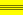

Economy of Vietnam
You can help expand this article with text translated from the corresponding article in Vietnamese. (November 2023) Click [show] for important translation instructions.
|
Ho Chi Minh City, the economic capital of Vietnam | |
| Currency | Vietnamese đồng (VND; ₫) |
|---|---|
| Calendar year | |
Trade organisations | AFTA, WTO, APEC, ASEAN, RCEP, CPTPP, FAO |
Country group | |
| Statistics | |
| Population | 100,300,000 (2023)[4] |
| GDP | |
| GDP rank | |
GDP growth | |
GDP per capita | |
GDP per capita rank | |
GDP by sector |
|
| 3.45% (Nov 2023)[8] | |
Population below poverty line | |
| 35.7 medium (2018)[11] | |
| |
Labour force | |
Labour force by occupation |
|
| Unemployment | |
Average gross salary | ₫ 7,600,000 / $300 monthly (Q1 2024)[17] |
Main industries | Electronics, machinery, steel, food processing, wood industry, textile, footwear, vehicle, rice, coffee, cashews, seafood, vegetable and tourism |
| External | |
| Exports | $371.3 billion (2022 est.)[18] |
Export goods | Electronics, textiles products, machinery, footwear products, transportation products, wooden products, seafood products, steel, crude oil, pepper, rice and coffee |
Main export partners |
|
| Imports | $ 358.9 billion (2022 est.)[18] |
Import goods | Machinery and industrial equipment, electronics, petroleum products, raw materials for the clothing and shoe industries, plastics, automobiles, metal, and chemical products |
Main import partners |
|
FDI stock | |
Gross external debt | $96.58 billion (31 December 2017 est.)[21] |
| Public finances | |
| 58.5% of GDP (2017 est.)[21][note 1] | |
| −6.7% (of GDP) (2017 est.)[21] | |
| Revenues | 54.59 billion (2017 est.)[21] |
| Expenses | 69.37 billion (2017 est.)[21] |
| Economic aid | $2.174 billion (2016) |
| Standard & Poor's:[22] BB+ (domestic) BB+ (foreign) BB+ (T&C assessment) Outlook: stable[23] Moody's:[23] Ba2 Outlook: Stable Fitch:[23] BB+ Outlook: stable | |
| $105.2 billion (Sep 2021 est.)[24] | |
All values, unless otherwise stated, are in US dollars. | |
.jpg){kind=link}
{kind=link}
The economy of Vietnam is a developing mixed socialist-oriented market economy.[3] It is the 35th-largest economy in the world by nominal gross domestic product (GDP) and the 26th-largest economy in the world by purchasing power parity (PPP). It is a lower-middle income country with a low cost of living. Vietnam is a member of the Asia-Pacific Economic Cooperation, the Association of Southeast Asian Nations and the World Trade Organization.
Since the mid-1980s, through the Đổi Mới reform period, Vietnam has made a shift from a highly centralized planned economy to a mixed economy. Before, South Vietnam was reliant on U.S. aid,[25] while North Vietnam and reunified Vietnam relied on communist aid until the Soviet Union's dissolution.[26]
The economy uses both directive and indicative planning through five-year plans, with support from an open market-based economy. Over that period, the economy has experienced rapid growth. In the 21st century, Vietnam is in a period of being integrated into the global economy. Almost all Vietnamese enterprises are small and medium enterprises (SMEs). Vietnam has become a leading agricultural exporter and served as an attractive destination for foreign investment in Southeast Asia.
According to a forecast by PricewaterhouseCoopers in February 2017[needs update], Vietnam may be the fastest-growing of the world's economies, with a potential annual GDP growth rate of about 5.1 percent, which would make its economy the 10th-largest in the world by 2050.[27][needs update] Vietnam has also been named among the so-called Next Eleven and CIVETS countries.
History
[edit]Before 1858
[edit]Civilization in Vietnam had been built on agriculture. The feudal dynasties always considered agriculture as the main economic base, and their economic thoughts have been predicated on physiocracy. Land ownership was regulated, and such large-scale works as dykes were constructed in the Red River Delta to facilitate wet rice cultivation. In peaceful times, soldiers were sent home to do farm work. Furthermore, the court prohibited slaughtering water buffalo and cattle and held many agriculture-related ceremonies. Handicrafts and art were valued, but commerce was deprecated, and businessmen were called by the derogatory term con buôn. Thang Long (Hanoi) was the main handicraft manufacturing center of the country. Chinese noted that the Vietnamese were doing business just like the same with in the Chinese Song dynasty.[28] From the 9th to 13th century, the Vietnamese traded ceramics and silks with regional powers such as China, Champa, Western Xia, Java among others.[29] Further archeological evidence suggests that Muslim traders had lived in Hanoi from around the 9th to 10th centuries, based on Muslim ceramics found in the Old Quarter of Hanoi.[30]
However, from the 16th century, Confucianism was losing its influence on Vietnamese society and a monetary pre-capitalism economy began to develop. During the Lê–Mạc period, the state encouraged semi-industrial business and sea-traders, as the Vietnamese economy would mainly depended on them for the next 250 years.[31] Cities such as Dong Kinh, Hội An and others grew quickly under rapid urbanization. They were later constrained when foreign nations saw them as an economic threat.[32][33]
During the 17th century, Vietnam's economy had reached its peak as the country was the third-largest economic power in East Asia and Southeast Asia. In the late 18th century, the economy suffered depression because of a series of diseases and disaster such as the Tay Son peasant rebellion which devastated the country. In 1806, Emperor Gia Long of the new Nguyễn dynasty imposed the "Sea Ban policy", which banned all Vietnamese overseas business and stopped Western merchants from entering Vietnam. This policy led to stagnation of the Vietnamese economy in the early-19th century, and contributed to Vietnam becoming a French colony.[34]
1858–1975
[edit]Until the French colonization in the mid-19th century, Vietnam's economy had been mostly agrarian, subsistence-based and village-oriented. French colonizers, however, deliberately developed the regions differently as the French needed raw materials and a market for French manufactured goods, designating the South for agricultural production as it was better suited for agriculture, and the North for manufacturing as it was naturally wealthy in mineral resources. Though the plan exaggerated regional divisions, the development of exports—coal from the North, rice from the South—and the importation of French manufactured goods stimulated domestic commerce.[35]
The separation distorted the basic Vietnamese economy by overly stressing regional economic differences. In the South, while irrigated rice remained the principal subsistence crop, the French introduced plantation agriculture with products such as tea, cotton, and tobacco. The colonial government also developed some extractive industries, such as the mining of coal, iron, and nonferrous metals. A shipbuilding industry was begun in Hanoi; railroads, roads, power stations, and hydraulics works were constructed. In the South, agricultural development concentrated on rice cultivation, and, nationally, rice and rubber were the main items of export. Domestic and foreign trade were centered around the Saigon-Cholon area. Industry in the South consisted mostly of food-processing plants and factories producing consumer goods.[36][better source needed]
When the North and South were divided politically in 1954, they also adopted different economic ideologies: socialism in the North and capitalism in the South. Destruction caused by the Second Indochina War from 1954 to 1975 seriously strained the economy. The situation was worsened by the country's 1.5 million military and civilian deaths, and the subsequent exodus of 1 million refugees, including tens of thousands of professionals, intellectuals, technicians and skilled workers out of the millions of war refugees.[35]
| Year | 1956 | 1958 | 1960 | 1962 | 1964 | 1966 | 1968 | 1970 | 1972 | 1974 |
|---|---|---|---|---|---|---|---|---|---|---|
|  Republic of Vietnam | 62 | 88 | 105 | 100 | 118 | 100 | 85 | 81 | 90 | 65 |
| Democratic Republic of Vietnam | 40 | 50 | 51 | 68 | 59 | 60 | 55 | 60 | 60 | 65 |
1975–1997
[edit]This section needs additional citations for verification. (September 2020) |
The government's Second Five-Year Plan (1976–1981) aimed for solid high annual growth rates in industrial and agricultural sectors and national income and sought to integrate the North and the South, but the goals were not attained. The economy remained dominated by small-scale production, low labor productivity, material and technological shortfalls, and insufficient food and consumer goods.[35] The more modest[clarification needed] goals of the Third Five-Year Plan (1981–85) were a compromise between ideological and pragmatic factions; they emphasized the development of agriculture and industry. Efforts were also made to decentralize planning and improve the managerial skills of government officials.[35]
After reunification in 1975, the economy of Vietnam was plagued by enormous difficulties in production, imbalances in supply and demand, inefficiencies in distribution and circulation, soaring inflation rates, and rising debt problems. Vietnam is one of the few countries in modern history to experience a sharp economic deterioration in a postwar reconstruction period.[37] Its peacetime economy was one of the poorest in the world and had shown a negative to very slow growth in total national output as well as in agricultural and industrial production.[38] Vietnam's gross domestic product ( GDP) in 1984 was valued at US$18.1 billion with a per capita income estimated to be between US$200 and US$300 per year. Reasons for this mediocre economic performance have included[according to whom?] severe climatic conditions that afflicted agricultural crops, bureaucratic mismanagement, elimination of private ownership, extinction of entrepreneurial classes in the South, and military occupation of Cambodia (which resulted in a cutoff of much-needed international aid for reconstruction).[39][better source needed]
From the late 1970s until the early 1990s, Vietnam was a member of the Comecon, and therefore was heavily dependent on trade with the Soviet Union and its allies. Following the dissolution of the Comecon and the loss of its traditional trading partners, Vietnam was forced to liberalize trade, devalue its exchange rate to increase exports, and embark on a policy of economic development.[35] [dead link] Between 1975 and 1994, the United States imposed a trade embargo on Vietnam, forbidding any trade during the 19-year period.
In 1986, Vietnam launched a political and economic renewal campaign (Đổi Mới) that introduced reforms to facilitate the transition from a centralized economy to a "socialist-oriented market economy". Đổi Mới combined government planning with free-market incentives and encouraged the establishment of private businesses and foreign investment, including foreign-owned enterprises. Furthermore, the Vietnam government stressed the necessity to lower birth rates when developing the economic and social rights of the population by implementing a policy that restricted the number of children per household to two, called the two-child policy.[40] By the late 1990s, the success of the business and agricultural reforms ushered in under Đổi Mới was evident. More than 30,000 private businesses had been created, the economy was growing at an annual rate of more than 7%, and poverty was nearly halved.[35]
Throughout the 1990s, exports increased by as much as 20% to 30% in some years. In 1999, exports accounted for 40% of GDP, an impressive performance in the midst of the economic crisis that hit other countries in Asia. Vietnam became a member of the World Trade Organization (WTO) in 2007, which freed Vietnam from textile quotas enacted worldwide as part of the Multi Fibre Arrangement (MFA) in 1974.[41] The MFA placed restrictions on the import by industrialized countries of textiles from developing countries. For China and other WTO members, however, textile quotas under the MFA expired at the end of 2004 as agreed in the Uruguay Round of trade negotiations in 1994.[35] A 2019 study found that Vietnam's WTO entry led to substantial gains in productivity for private firms, but had no impact on state-owned enterprises. In the absence of state-owned enterprises, "the overall productivity gains would have been about 40% larger in a counterfactual Vietnamese economy."[42]
Development since 1997
[edit]Vietnam's economic policy following the 1997 Asian Financial Crisis has been a cautious one, emphasizing macroeconomic stability rather than growth. While the country shifted toward a more market-oriented economy, the Vietnamese government still continues to hold a tight rein over major state sectors, such as the banking system, state-owned enterprises and foreign trade.[43][44] GDP growth fell to 6% in 1998 and 5% in 1999. The economy saw continuous real GDP growth of at least 5% since 2000.[45]
The signing of the Bilateral Trade Agreement (BTA) between the United States and Vietnam on July 13, 2000, was a significant milestone. The BTA provided for "normal trade relations" (NTR) status of Vietnamese goods in the U.S. market. It was expected that access to the U.S. market would allow Vietnam to hasten its transformation into a manufacturing-based, export-oriented economy. Furthermore, it would attract foreign investment, not only from the U.S., but also from Europe, Asia and other regions.[46]
In 2001, the ruling Communist Party of Vietnam approved a 10-year economic plan that enhanced the role of the private sector, while reaffirming the primacy of the state.[35] Growth then rose to 6% to 7% between 2000 and 2002 even in the midst of the global recession, making it the world's second fastest-growing economy. At the same time, investment grew threefold and domestic savings quintupled.[47]
In 2003, the private sector accounted for more than one-quarter of all industrial output.[35] However, between 2003 and 2005, Vietnam fell dramatically in the World Economic Forum's global competitiveness report rankings, largely due to negative perceptions of the effectiveness of government institutions.[35] Official corruption is endemic, and Vietnam lags in property rights, efficient regulation of markets, and labor and financial market reforms.[35]
Vietnam had an average GDP growth of 7.1% a year from 2000 to 2004. The GDP growth was 8.4% in 2005, the second-largest in Asia, trailing only China's. The government estimated that GDP grew in 2006 by 8.17%. According to the Minister of Planning and Investment, the government targeted a GDP growth of around 8.5% in 2007.[48]
On November 7, 2006, the General Council at the World Trade Organization (WTO) approved Vietnam's accession package. On January 11, 2007, Vietnam officially became the WTO's 149th member, after 11 years of preparation, including eight years of negotiation.[41] The country's access to the WTO was intended to provide an important boost to the economy, as it ensured that the liberalizing reforms continue and created options for trade expansion. However, the accession also brought serious challenges, requiring the economy to open up to increasing foreign competition.[49][50]
Vietnam's economy continues to expand at an annual rate in excess of 7%, one of the fastest-growing in the world, but it grew from an extremely low base, as it suffered the crippling effect of the Vietnam War from the 1950s to the 1970s, the punitive embargoes of the United States and its allies, as well as the austerity measures introduced in its aftermath.[35] In 2012, the communist party was forced to apologise about the mismanagement of the economy after large numbers of SOEs went bankrupt and inflation rose. The main danger has been over the bad debt in the banks totalling to 15% and forecast growth is 5.2% for 2012 but this is also due to the global economic crisis.[51] The government has launched schemes to reform the economy, however, such as lifting foreign ownership cap from 49% and partially privatizing the country's state-owned companies that have been responsible for the recent economic downturn. By the end of 2013, the government is expected to privatize 25–50% of SOEs, only maintaining control on public services and military. The recent reforms have created a major boom in the Vietnamese stock market as confidence in the Vietnamese economy is returning.
Vietnam's current economic turmoil has given rise to question of a new period of changing political economy, however.[52] Poverty remains to be the main concern on the national performance index as of 2018. The Provincial Governance and Public Administration Performance Index (PAPI) found that 28% of survey respondents cited poverty as their main problem.[53] Most respondents agreed with the statement that "[P]overty reduction is imperative to ensuring that Vietnam becomes an advanced, developed country. The percentage of the poorest Vietnamese respondents who believed that their economic situation would worsen increased from 13% in 2016 to 26% in 2017.[54] The percentage of respondents with health insurance increased from 74% in 2016 to 81% in 2017, with strongest gains in the rural population groups.[54]
In 2017, Transparency International, a non-profit that tracks graft ranked Vietnam as 113th worst out of 176 countries and regions for perceptions of corruption.[53][failed verification] Several graft cases found in 2016 and 2017 led to the corruption crackdown which prosecuted many bankers, businesspeople, and government officials under charges of corruption. PAPI found that bribery at public district hospital services decreased from 17% in 2016 to 9% in 2017.[54] Reports of land seizures went down from an average of about 9% before 2013, to less than 7% in 2017. The number of respondents who believed that their land was sold at a fair market value decreased from 26% in 2014 to 21% in 2017.[54] Land-use graft and petty graft, such as police officers accepting bribes, are common. According to Ralph Jennings, Vietnam has been privatizing many of its state-owned operations to reduce corruption and increase efficiency.[55][undue weight? – discuss]
As of March 2018, Vietnam's economy continued to grow, achieving the best annual growth rate in over a decade; which has led media outlets to speculate if in the near future it could be one of the Asian tigers.[56][57]
According to DBS Bank in 2019, Vietnam's economy has the potential to grow at a pace of about 6%-6.5% by 2029. Vietnam can overpower Singapore's economy by the next decade because of its strong foreign investment inflow and productivity growth.[58] However, Vietnam has surpassed Singapore just a year later.
In the early 2020s, despite trade wars with Vietnam's major trade partners, a pandemic and the increasing trend in deglobalisation, Vietnam has still managed to become Asia's top-performing economy.[59] Since 2000, Vietnam has now managed to manufacture higher-value goods with better paying jobs due to its more highly skilled workers. These workers now produce electronics which makes up 38% (in 2020) of Vietnam's exports (compared to 14% in 2010). The country had achieved an average of 6.2% in economic growth (faster than any other country in Asia after China).[60] Foreign investment on the luxury hotels sector and resorts will rise to support the tourist industry.[61]
Data
[edit]The following table shows the main economic indicators in 1990–2020 (with IMF staff estimations in 2021–2027). Inflation below 5% is in green.[62]
| Year | GDP growth
(real) |
GDP
(in Bil. US$nominal) |
GDP
(in Bil. US$PPP) |
GDP per capita
(in US$ nominal) |
GDP per capita
(in US$ PPP) |
Inflation rate
(in Percent) |
Unemployment rate
(in Percent) |
Government debt
(in % of GDP) |
|---|---|---|---|---|---|---|---|---|
| 1990 | 5.0 | 8.2 | 77.7 | 121.7 | 1151.2 | 36.0 | 12.3 | n/a |
| 1991 | 5.8 | 9.7 | 85.0 | 141.1 | 1236.3 | 81.8 | 10.4 | n/a |
| 1992 | 8.7 | 12.5 | 94.5 | 179.0 | 1350.3 | 37.7 | 11.0 | n/a |
| 1993 | 8.1 | 16.7 | 104.6 | 235.0 | 1468.3 | 8.4 | 10.6 | n/a |
| 1994 | 8.8 | 20.7 | 116.2 | 286.0 | 1605.0 | 9.5 | 10.3 | n/a |
| 1995 | 9.5 | 26.4 | 130.0 | 358.7 | 1765.7 | 16.9 | 5.8 | n/a |
| 1996 | 9.3 | 31.4 | 144.8 | 419.1 | 1934.8 | 5.6 | 5.9 | n/a |
| 1997 | 8.2 | 34.1 | 159.3 | 449.3 | 2095.7 | 3.1 | 6.0 | n/a |
| 1998 | 5.8 | 34.6 | 170.3 | 448.1 | 2207.3 | 8.1 | 6.9 | n/a |
| 1999 | 4.8 | 36.4 | 181.0 | 465.2 | 2310.3 | 4.1 | 6.7 | n/a |
| 2000 | 6.8 | 39.6 | 197.6 | 498.6 | 2489.3 | -1.8 | 6.4 | 24.8 |
| 2001 | 6.9 | 41.3 | 216.0 | 513.2 | 2684.5 | -0.3 | 6.3 | 25.4 |
| 2002 | 7.1 | 44.6 | 234.9 | 546.6 | 2881.3 | 4.1 | 6.0 | 27.7 |
| 2003 | 7.3 | 50.2 | 257.1 | 610.4 | 3124.4 | 3.3 | 5.8 | 29.8 |
| 2004 | 7.8 | 62.9 | 284.6 | 757.0 | 3426.5 | 7.9 | 5.6 | 29.4 |
| 2005 | 7.5 | 73.2 | 315.7 | 873.1 | 3765.8 | 8.4 | 5.3 | 28.7 |
| 2006 | 7.0 | 84.3 | 348.1 | 996.3 | 4114.3 | 7.5 | 4.8 | 30.2 |
| 2007 | 7.1 | 98.4 | 383.0 | 1152.3 | 4484.3 | 8.3 | 4.6 | 32.2 |
| 2008 | 5.7 | 124.8 | 412.5 | 1446.6 | 4782.9 | 23.1 | 2.4 | 31.0 |
| 2009 | 5.4 | 129.0 | 437.5 | 1481.4 | 5023.9 | 6.7 | 2.9 | 36.3 |
| 2010 | 6.4 | 143.2 | 471.2 | 1628.0 | 5357.1 | 9.2 | 2.9 | 36.8 |
| 2011 | 6.4 | 171.3 | 511.9 | 1949.8 | 5826.2 | 18.7 | 2.2 | 35.8 |
| 2012 | 5.5 | 195.2 | 568.4 | 2197.6 | 6400.2 | 9.1 | 2.0 | 38.3 |
| 2013 | 5.6 | 212.7 | 607.0 | 2370.0 | 6762.7 | 6.6 | 2.2 | 41.4 |
| 2014 | 6.4 | 232.9 | 660.6 | 2566.9 | 7281.2 | 4.1 | 2.1 | 43.6 |
| 2015 | 7.0 | 236.8 | 700.3 | 2581.9 | 7635.3 | 0.6 | 2.3 | 46.1 |
| 2016 | 6.7 | 252.1 | 770.9 | 2720.2 | 8316.2 | 2.7 | 2.3 | 47.5 |
| 2017 | 6.9 | 277.1 | 851.1 | 2957.9 | 9085.6 | 3.5 | 2.2 | 46.3 |
| 2018 | 7.2 | 303.1 | 934.1 | 3201.7 | 9867.4 | 3.5 | 2.2 | 43.7 |
| 2019 | 7.2 | 327.9 | 1018.8 | 3398.2 | 10559.3 | 2.8 | 2.2 | 41.3 |
| 2020 | 2.9 | 342.9 | 1061.4 | 3520.7 | 10897.0 | 3.2 | 3.3 | 41.7 |
| 2021 | 2.6 | 366.2 | 1134.0 | 3724.5 | 11533.9 | 1.9 | 2.7 | 40.2 |
| 2022 | 7.0 | 413.8 | 1299.7 | 4162.9 | 13075.0 | 3.8 | 2.4 | 41.3 |
| 2023 | 6.2 | 469.6 | 1429.0 | 4682.8 | 14248.9 | 3.2 | 2.3 | 42.0 |
Economic sectors
[edit]Agriculture, fishery and forestry
[edit]{kind=link}
{kind=link}
{kind=link}
In 2003, Vietnam produced an estimated 30.7 million cubic meters of wood. Production of sawn wood was a more modest 2,950 cubic meters. In 1992, in response to dwindling forests, Vietnam imposed a ban on the export of logs and raw timber. In 1997, the ban was extended to all timber products except wooden artifacts. During the 1990s, Vietnam began to reclaim land for forests with a tree-planting program.[35]
Vietnam's fishing industry, which has abundant resources given the country's long coastline and extensive network of rivers and lakes, has generally experienced moderate growth. In 2003, the total catch was about 2.6 million tons. However, seafood exports increased fourfold between 1990 and 2002 to more than US$2 billion, driven in part by shrimp farms in the South and "catfish", which are a different species from their American counterparts, but are marketed in the United States under the same name. By selling vast quantities of shrimp and catfish to the U.S., Vietnam triggered antidumping complaints by the U.S., which imposed tariffs in the case of catfish and was considering doing the same for shrimp. In 2005, the seafood industry began to focus on domestic demand to compensate for declining exports.[35]
Vietnam is one of the top rice exporting countries in the world, but the limited sophistication of small-scale Vietnamese farmers causes quality to suffer.[63] Vietnam is also the world's second-largest exporter of coffee, trailing behind Brazil.[64]
Vietnam produced in 2018:[65]
- 44.0 million tons of rice (5th largest producer in the world, behind China, India, Indonesia and Bangladesh);
- 17.9 million tons of sugarcane (16th largest producer in the world);
- 14.8 million tons of vegetable;
- 9.8 million tons of cassava (7th largest producer in the world);
- 4.8 million tonnes of maize;
- 2.6 million tonnes of cashew nut (largest producer in the world);
- 2.0 million tons of banana (20th largest producer in the world);
- 1.6 million tons of coffee (2nd largest producer in the world, only behind Brazil);
- 1.5 million tons of coconut (6th largest producer in the world);
- 1.3 million tons of sweet potato (9th largest producer in the world);
- 1.2 million tons of watermelon;
- 1.1 million tons of natural rubber (3rd largest producer in the world, behind Thailand and Indonesia);
- 852 thousand tons of orange (18th largest producer in the world);
- 779 thousand tons of mango (including mangosteen and guava);
- 654 thousand tons of pineapple (12th largest producer in the world);
- 270 thousand tons of tea (6th largest producer in the world);
In addition to smaller productions of other agricultural products.[65]
In 2018, Vietnam was the world's 5th largest producer of pork (3.8 million tonnes). This year the country also produced 839 thousand tons of chicken meat, 334 thousand tons of beef, 936 million liters of cow's milk, 20 thousand tons of honey, among others.[65]
Energy, mining and minerals
[edit]{kind=link}
Petroleum is the main source of energy, followed by coal, which contributes about 25% of the country's energy (excluding biomass). Vietnam's oil reserves are in the range of 270–500 million tons. Oil production rose rapidly to 403,300 barrels per day (64,120 m3/d) in 2004, but output is believed to have peaked and is expected to decline gradually.
In 2003, mining and quarrying accounted for 9.4% of GDP, and the sector employed 0.7% of the workforce. Petroleum and coal are the main mineral exports. Also mined are antimony, bauxite, chromium, gold, iron, natural phosphates, tin, and zinc.[35]
In 2019, Vietnam was the 9th largest world producer of antimony;[66] 10th largest producer of tin;[67] 11th largest producer of bauxite;[68] 12th largest world producer of titanium ;[69] 13th largest world producer of manganese[70] and 9th largest producer of phosphate in the world.[71] The country is also one of the world's largest producers of ruby, sapphire, topaz and spinel.
Crude oil was Vietnam's leading export until the late 2000s, when high-tech electrical manufactures emerged to become the biggest export market (by 2014, crude oil comprised only 5% of Vietnamese exports, compared to 20% of all exports in 1996). This is in part because Vietnam crude oil peaked in 2004, when crude oil represented 22% of all export earnings.[72] Petroleum exports are in the form of crude petroleum because Vietnam has a very limited refining capacity. Vietnam's only operational refinery, a facility at Cat Hai near Ho Chi Minh City, has a capacity of only 800 barrels per day (130 m3/d). Refined petroleum accounted for 10.2% of total imports in 2002. As of 2012, Vietnam had only one refinery, the Dung Quat refinery, but a second one, the Nghi Son Refinery was planned and was scheduled for construction in May 2013.[35][73]
Vietnam's anthracite coal reserves are estimated at 3.7 billion tons. Coal production was almost 19 million tons in 2003, compared with 9.6 million tons in 1999. Vietnam's potential natural gas reserves are 1.3 trillion cubic meters. In 2002, Vietnam brought ashore 2.26 billion cubic meters of natural gas. Hydroelectric power is another source of energy. In 2004, Vietnam confirmed plans to build a nuclear power plant with Russian assistance,[35] and a second by a Japanese group.
From 2019 onwards, renewable energy deployment in Vietnam accelerated, by far surpassing the other Southeast Asian countries.[74] Most of the newly deployed renewable energy was in the form of solar and wind power plants. By 2023, however, this development had slowed down, mainly due to limited electrical grid capacity and reduced government support.[74]
Industry and manufacturing
[edit]{kind=link}
Although the industrial sector contributed 40.1% of GDP in 2004, it employed only 12.9% of the workforce. In 2000, 22.4% of industrial production was attributable to non-state activities. From 1994 to 2004, the industrial sector grew at an average annual rate of 10.3%. Manufacturing contributed 20.3% of GDP in 2004, while employing 10.2% of the workforce. From 1994 to 2004, manufacturing GDP grew at an average annual rate of 11.2%. The top manufacturing sectors — electronics, food processing, cigarettes and tobacco, textiles, chemicals, and footwear goods — experienced rapid growth. Benefits from its proximity to China with lower labor cost, Vietnam is becoming a new manufacturing hub in Asia, especially for Korean and Japanese firms. For instance, Samsung produces about 40% of its phones in Vietnam.[75] In the past decade, a significant automotive industry has been developed. As of 2019, Samsung employs over 200,000 employees in the Hanoi-area of Vietnam to produce smartphones, while offsourcing some manufacturing to China[76] and manufacturing large portions of its phones in India.[77][78][79][80] LG Electronics moved smartphone production to Vietnam from South Korea, in order to stay competitive. LG said that "Vietnam provides an "abundant labor force", as motivation for the move.[81]
Services and tourism
[edit]In 2004, services accounted for 38.2% of gross domestic product (GDP). From 1994 to 2004, GDP attributable to the service sector grew at an average annual rate of 6.0%.[35]
Tourism
[edit]{kind=link}
.jpg){kind=link}
In 2012, Vietnam welcomed 6.8 million international visitors and the number is expected to reach over 7 million in 2013. Vietnam keeps emerging as an attractive destination. In TripAdvisor's list of top 25 destinations Asia 2013 by travelers' choice, there are four cities of Vietnam, namely Hanoi, Ho Chi Minh City, Hoi An and Ha Long.
2016 was the first year ever which Vietnam welcomed over 10 million international visitors.[82] Since then, this figure has continued to rise. In 2019, Vietnam with 18 million international visitors was fifth most visited country in the Asia-Pacific region as per World Tourism rankings released by the United Nations World Tourism Organization.[83]
During the COVID-19 pandemic in Vietnam, the country suspended issuance of all tourist visas from March 2020 and recorded a 98% year-on-year drop in foreign visitors for April 2020. Furthermore, Total tourism revenues dropped by over 60% year-on-year for July 2020.[84]The country reopened to international arrivals in March of 2022.
In the first six months of 2024, Vietnam welcomed 6,943,961 tourist arrivals representing an increase over the same period in 2023 of 65.7 percent.[85]
Export of labour
[edit]The export of labour, that is the sending of Vietnamese workers to work in other countries, is also key to the Vietnamese economy, with much of their earnings being sent back to Vietnam. This labour export was disrupted due to the Covid pandemic, however by 2022, Vietnam hopes to send 90,000 workers abroad. Traditional destinations have included South Korea, Japan, Malaysia, the Republic of China, and now Vietnam is aiming for Germany, Russia, and Israel.[86]
Banking and finance
[edit]{kind=link}
{kind=link}
Banking
[edit]The most important banks are the state-owned VietinBank, BIDV, and Vietcombank, which dominate the banking sector. There is also a trend of foreign investment into profitable banks. For example, VietinBank is currently owned by Bank of Tokyo Mitsubishi UFJ (19.73%) while Vietcombank is owned by Mizuho (15%).
| Rank | Bank | Date of update | Authorised capital | |
|---|---|---|---|---|
| In VND, billions | In US dollars, billions | |||
| 1 | BIDV | December 31, 2020 | 40,220.2 | 1.73 |
| 2 | VietinBank | December 31, 2020 | 37,234.0 | 1.60 |
| 3 | Vietcombank | December 31, 2020 | 37,088.8 | 1.59 |
| 4 | Techcombank | December 31, 2020 | 35,001.4 | 1.50 |
| 5 | Agribank | December 31, 2020 | 30,709.9 | 1.32 |
(NOTE: Average exchange rates of 2020. Source: tradingeconomics.com. 1 USD = 23,286 VND)
Finance
[edit]Vietnam has two stock trading centers, the Ho Chi Minh City Securities Trading Center and the Hanoi Securities Trading Center, which run the Ho Chi Minh Stock Exchange (HOSE) and the Hanoi Stock Exchange (HNX), respectively.
Currency, exchange rate and inflation
[edit]_per_capita_in_2022.svg){kind=link}
_per_capita_in_2022.svg){kind=link}
Currency
[edit]The currency used in Vietnam is the đồng, shortened as VND or đ.
Exchange rate
[edit]The exchange rate between the U.S. dollar and the Vietnamese đồng is important because the dong, although not freely convertible, is loosely pegged to the dollar through an arrangement known as a "crawling peg". This mechanism allows the dollar–dong exchange rate to adjust gradually to changing market conditions.[35] As of December 5, 2018, a US dollar is worth 23,256 Vietnamese đồng.
Gold still maintains its position as a physical currency to a certain extent, although it has seen its economic role declining in recent years.[87]
Inflation
[edit]Vietnam saw high inflation in 1980s.[88] During this period, there was excessive demand for the industrial sector development, food, and other commodities. In order to stimulate supply, government attempted co-integration of parallel and planned market. Though the initial reform[89] in the 1980s raised the total output, due to the report being partial, it also led to the CPI inflation rate being pushed to 200% in 1982. To tackle this, govt introduced forced savings which can be understood as the accumulation of unspent money to make the monetary overhang.
Vietnam's economy experienced a hyperinflation period in its early years of the extensive reform program, especially from 1987 to 1992.[90]
In 2008, inflation was tracking at 20.3% for the first half of the year,[91] higher than the 3.4% in 2000, but down significantly from 160% in 1988.[35]
In 2010, inflation stood at 11.5%, and 18.58% in 2011.[92]
At the end of 2012, inflation stood at 7.5%, a substantial decrease from 2011.[93]
In 2013, inflation stood at 6%,[94] and 4.09% in 2014.[95] In 2016, it was only 2%.
Mergers and acquisitions
[edit]With 1,120 inbound deals with a cumulated value of almost 15 bil. USD, there is a tremendous interest by foreign companies to get access to the Vietnamese market or continue the expansion using mergers and acquisitions. From 1991 to February 2018, Vietnamese companies were involved as either an acquiror or an acquired company in 4,000 mergers and acquisitions with a total value of 40.6 bil. USD. The mergers and acquisitions activities faced many obstacles, lowering the rate of success of the transaction. Common obstacles come from culture, transparency and legal aspects.[96] The Institute for Mergers, Acquisitions and Alliances that has been active in Vietnam since 2006 and its M&A expert Christopher Kummer think that after the peak in 2016 and 2017 the trend will decrease in 2018.[97][98][99] Among the largest and most prominent transactions since 2000 are:
| Date Announced | Acquiror Name | Acquiror Nation | Target Name | Target Nation | Value of Transaction ($mil) |
|---|---|---|---|---|---|
| 12/19/2017 | Vietnam Beverage Co. Ltd. | Vietnam | Sabeco | Vietnam | 4,838.49 |
| 02/16/2012 | Perenco SA | France | ConocoPhilips Co-Oil&Gas Asset | Vietnam | 1,290.00 |
| 04/29/2016 | Central Group of Cos | Thailand | Casino Guichard-Perrachon-BigC | Vietnam | 1,135.33 |
| 12/25/2015 | Singha Asia Holding Pte Ltd. | Singapore | Masan Consumer Corp | Vietnam | 1,100.00 |
| 02/13/2015 | China Steel Asia Pac Hldg Pte | Singapore | Formosa Ha Tinh (Cayman) Ltd. | Vietnam | 939.00 |
| 08/07/2014 | Berli Jucker PCL | Thailand | Metro Cash & Carry Vietnam Co | Vietnam | 875.20 |
| 12/27/2012 | Bk of Tokyo-Mitsubishi UFJ Ltd. | Japan | VietinBank | Vietnam | 742.34 |
| 04/17/2015 | TCC Land International Pte Ltd. | Singapore | Metro Cash & Carry Vietnam Co | Vietnam | 705.14 |
| 10/05/2011 | Vincom JSC | Vietnam | Vinpearl JSC | Vietnam | 649.39 |
| 01/28/2016 | Masan Grp Corp | Vietnam | Masan Consumer Corp | Vietnam | 600.00 |
All of the top 10 deals are inbound into Vietnam and none are outbound.[100]
Trade
[edit]{kind=link}
Economic relations with the United States are improving but are not without challenges. Although the United States and Vietnam reached a landmark bilateral agreement in December 2001, which helped increase Vietnam's exports to the United States, disagreements over textile and catfish exports are hindering full implementation of the agreement. Further disrupting the economic relations between the two countries were efforts in Congress to link non-humanitarian aid to Vietnam's human rights record. Barriers to trade and intellectual property are also within the purview of bilateral discussions.[35]
Given neighboring China's rapid economic ascendancy, Vietnam highly values its economic relationship with China. Following the resolution of most territorial disputes, trade with China is growing rapidly, and in 2004, Vietnam imported more products from China than from any other country. In November 2004, the Association of Southeast Asian Nations (ASEAN), of which Vietnam is a member, and China announced plans to establish the world's largest free-trade area by 2010.[35]
Vietnam became a member of the World Trade Organization (WTO) on January 11, 2007.[35]
In December 2015, Vietnam joined the ASEAN Economic Community along with the 9 other ASEAN members. The community's goal is to integrate the 10 members of ASEAN and bring a freer flow of labor, investment and trade to the region.[101]
Currently, Vietnam is being tugged in multiple directions from multiple powers, namely, Russia, China and the U.S. in its attempts to achieve economic multilateralization.[102][103] Alternatively in the region, it is also pulled by either China, South Korea, Japan or ASEAN countries, as well as other constituents such as Taiwan & Hong Kong as well as Australia/New Zealand and India in the region (ASEAN+3 and ASEAN+6).[104]
Foreign trade
[edit]Since Đổi Mới in 1986, Vietnam has increased trading, growing both exports and imports in double digits ever since. More recently, alarms on trade account deficits have been raised domestically, especially after joining the WTO in 2007. Throughout the next five years after 2007, Vietnam ran a trade deficit with the rest of the world in the tens of billions of dollars, with the record trade deficit in 2008 of US$18 billion.[91]
The account deficit has since decreased. In 2012, Vietnam recorded a trade surplus of US$780 million, the first trade surplus since 1993. Total trade reached US$228.13 billion, an increase of 12.1% from 2011.[105] In 2013, Vietnam recorded the second year of trade surplus of US$863 million. In 2014, Vietnam recorded the third year of trade surplus of US$2.14 billion, the largest trade surplus ever in history.[106] Three years later, in 2017, it surpassed itself with a record of $2.92 billion.
| Year | Total trade (US$ billions) | Export (US$ billions) | Export change (%) | Import (US$ billions) | Import change (%) | Account balance (US$ billions) |
|---|---|---|---|---|---|---|
| 2001 | 31.20 | 15.00 | 16.20 | -1.2 | ||
| 2002 | 36.40 | 16.70 | 11.3 | 19.70 | 21.6 | -3.0 |
| 2003 | 45.20 | 20.2 | 21.0 | 25.2 | 27.9 | -5.1 |
| 2004 | 58.50 | 26.5 | 31.2 | 32.0 | 27.0 | -5.4 |
| 2005 | 69.40 | 32.4 | 22.3 | 37.0 | 5.7 | -4.5 |
| 2006 | 84.70 | 39.8 | 22.8 | 44.9 | 21.4 | -5.1 |
| 2007 | 111.30 | 48.6 | 22.1 | 62.7 | 39.6 | -14.1 |
| 2008 | 143.40 | 62.7 | 29.0 | 80.7 | 28.7 | -18.0 |
| 2009 | 127.00 | 57.1 | -8.9 | 69.9 | -13.4 | -12.9 |
| 2010 | 157.00 | 72.2 | 26.4 | 84.8 | 21.3 | -12.6 |
| 2011 | 203.41 | 96.91 | 34.2 | 106.75 | 25.8 | -9.84[107] |
| 2012 | 228.57 | 114.57 | 18.2 | 113.79 | 6.6 | 0.780[108] |
| 2013 | 263.47 | 132.17 | 15.4 | 131.30 | 15.4 | 0.863 |
| 2014 | 298.23 | 150.19 | 13.7 | 148.04 | 12.1 | 2.14 |
| 2015 | 327.76 | 162.11 | 7.9 | 165.65 | 12 | -3.54[109] |
| 2016 | 349.20 | 175.94 | 8.6 | 173.26 | 4.6 | 2.68 |
| 2017 | 425.12 | 214.01 | 21.2 | 211.1 | 20.8 | 2.92[110] |
| 2018 | 480.17 | 243.48 | 13.2 | 236.69 | 11.1 | 6.8[111] |
| 2019 | 517.26 | 264.189 | 8.4 | 253.071 | 6.8 | 11.12[112] |
| 2020 | 545.36 | 282.65 | 7 | 262.7 | 3.7 | 19.95[113] |
Exports
[edit]{kind=link}
In 2004, Vietnam's exports of merchandise were valued at US$26.5 billion, and were growing rapidly along with imports. Vietnam's principal exports were crude oil (22.1%), textiles and garments (17.1%), footwear (10.5%), fisheries products (9.4%) and electronics (4.1%). The main destinations of Vietnam's exports were the United States (18.8%), Japan (13.2%), China (10.3%), Australia (6.9%), Singapore (5.2%), Germany (4.0%), and the United Kingdom (3.8%).[35]
In 2012, export rose 18.2%, valued at US$114.57 billion.[105] Vietnam's main export market included the EU with US$20 billion, United States with US$19 billion, ASEAN with $US 17.8 billion, Japan with US$13.9 billion, China with US$14.2 billion, and South Korea with US$7 billion.[114]
In 2013, exports rose 15.4%, valued at US$132.17 billion, of which export of electronics now comprised 24.5% of total export, compared with a 4.4% in 2008. Textiles and garments are still an important part in Vietnam's export, valued about US$17.9 billion in 2013.
In 2014, exports rose 13.6%, reaching US$150.1 billion. Electronics and electronics parts, textiles and garments, computers and computer parts are the three main export groups of Vietnam. The United States continued to be Vietnam's largest export market, with US$28.5 billion. The EU is second with US$27.9 billion, ASEAN is third, China is fourth and Japan is the fifth largest export market of Vietnam.
Imports
[edit]In 2004, Vietnam's merchandise imports were valued at US$31.5 billion and growing rapidly. Vietnam's principal imports were machinery (17.5%), refined petroleum (11.5%), steel (8.3%), material for the textile industry (7.2%), and cloth (6.0%). The main origins of Vietnam's imports were China (13.9%), Taiwan (11.6%), Singapore (11.3%), Japan (11.1%), South Korea (10.4%), Thailand (5.8%), and Malaysia (3.8%).[35]
Vietnam import rose 6.6% in 2012, valued at US$113.79 billion.[105] Major import countries were China US$29.2 billion, ASEAN with US$22.3 billion, South Korea with US$16.2 billion, Japan with US$13.7 billion, EU with US$10 billion, and United States with US$6.3 billion.[114]
In 2014, imports rose 12.1%, reaching US$148 billion, most of which are materials and machinery needed for export. China continued to be Vietnam's largest import partner, with US$43.7 billion. The ASEAN is second with US$23.1 billion, South Korea is third, Japan is fourth and the EU is the fifth largest import partner of Vietnam.
External debt, foreign aid and foreign investment
[edit]In 2004, external debt amounted to US$16.6 billion, or 37% of GDP.[115][35]
From 1988 to December 2004, cumulative foreign direct investment (FDI) commitments totaled US$46 billion. By December 2004, about 58% had been dispersed. About half of FDI has been directed at the two major cities (and environs) of Ho Chi Minh City and Hanoi. In 2003, new foreign direct investment commitments were US$1.5 billion. The largest sector by far for licensed FDI is industry and construction. Other sectors attracting FDI are oil and gas, fisheries, construction, agriculture and forestry, transportation and communications, and hotels and tourism. From 2006 to 2010, Vietnam hoped to receive US$18 billion of FDI to support a targeted growth rate in excess of 7%. Despite rising investments, foreign investors still regard Vietnam as a risky destination, as confirmed by recent survey by the Japan External Trade Organization of Japanese companies operating in Vietnam. Many of the respondents complained about high costs of utilities, office rentals and skilled labor. Corruption, bureaucracy, lack of transparent regulations and the failure to enforce investor rights are additional obstacles to investment, according to the U.S. State Department. Vietnam tied with several nations for the 102nd place in Transparencies International's Corruption Perceptions Index in 2004.[35] A study was conducted to examine the effect foreign investment had on corruption in Vietnam. The study concluded that the propensity of foreign firms to bribe at entry is higher in restricted sectors. Also, the removal of investment restrictions leads to reductions in bribery as a result of more Foreign Investment Enterprises, and consequently more competition entering that sector.[116]
The World Bank's assistance program for Vietnam has three objectives: to support Vietnam's transition to a market economy, to enhance equitable and sustainable development and to promote good governance. From 1993 through 2004, Vietnam received pledges of US$29 billion of official development assistance (ODA), of which about US$14 billion, or 49%, has been disbursed. In 2004, international donors pledged ODA of US$2.25 billion, of which US$1.65 billion actually was disbursed. Three donors accounted for 80% of disbursements in 2004: Japan, the World Bank, and the Asian Development Bank. From 2006 to 2010, Vietnam hopes to receive US$14 billion to US$15 billion of ODA.[35]
Pledged foreign direct investment was US$21.3 billion for 2007 and a record US$31.6 billion for the first half of 2008.[91] Mergers and acquisitions have gradually become an important channel of investments in the economy, especially after 2005.
Free trade agreements
[edit]{kind=link}
- ASEAN Free Trade Area (AFTA)
- ASEAN–Australia–New Zealand Free Trade Area (AANZFTA) is a free trade area between ASEAN and ANZCERTA, signed on 27 February 2009[117] and coming into effect on 1 January 2010.[118] Details of the AANZFTA agreement are available online.[119]
- ASEAN–China Free Trade Area (ACFTA), in effect as of 1 January 2010[120]
- ASEAN–India Free Trade Area (AIFTA), in effect as of 1 January 2010[120]
- ASEAN–Japan Comprehensive Economic Partnership (AJCEP)
- ASEAN–Korea Free Trade Area (AKFTA), in effect as of 1 January 2010[120]
- Comprehensive Economic Partnership for East Asia
- Comprehensive and Progressive Agreement for Trans-Pacific Partnership.
- On 29 May 2015, Vietnam signed a Free Trade Agreement (FTA) with Eurasian Economic Union.[121]
- European Union-Vietnam Free Trade Afreement (EVFTA) came into effect on 1 August 2020.
- Vietnam-Chile Free Trade Agreement (VCFTA) came into effect on 1 January 2014.[122]
- Vietnam-Korea Free Trade Agreement (VKFTA) came into effect on 20 December 2015.[123]
- Japan-Vietnam Economic Partnership Agreement came into effect on 1 October 2009.[124]
- United Kingdom-Vietnam Free Trade Agreement came into effect on 1 January 2021.[125]
Economic development strategy
[edit]Guiding principle
[edit]Industrialization and Modernization (IM)
[edit]"Industrialization and modernization is a process of fundamental and all-rounded change of production, business, services and social and economic management from the predominant use of artisanal labor to a predominant use of labor power with technology, methods and ways of working that are advanced, modern and rely upon the development of industry and scientific – technical progress to create high labor productivity. So from a theoretical and practical view industrialization and modernization are a necessary historical process that Vietnam must go through change our country into an industrial country […]"
- 7th National Congress-Central Committee (1991)
Socialist-Oriented Market Economy (SOME)
[edit]"The nature of a socialist-oriented market economy in our country:
- It is not an economy managed according in the style of a centralized bureaucratic subsidized system
- It is not a free market capitalist economy
- It is not yet entirely a socialist-oriented economy. This is because our country is in the period of transition to socialism, and there is still a mixture of, and a struggle between, the old and the new, so there simultaneously are, and are not yet sufficiently, socialist factors"
- 7th National Congress-Central Committee (1991)
Development strategy
[edit]Trade liberalization
[edit]Over the past 30 years, Vietnam has signed numerous trade agreements with different partners, promoting the country as one of the main manufacturing hubs in the world. In 1995, Vietnam joined the ASEAN community. In 2000, it signed a free trade agreement with the United States, to be followed by admission to the World Trade Organisation in 2007. Since then, the country has further integrated itself into the world economy with bilateral agreements with other ASEAN countries, China, India, Japan, and Korea, to name a few. Vietnam has actively working with other partners on ratifying the Trans-Pacific Partnership to form CP TPP, or TPP-11, after the withdrawal of the US, in order to promote economic cooperation, regional connectivity and promote economic growth between member countries. The World Bank estimates that the CP TPP would help the country's GDP to grow by 1.1% by 2030 with a boost to productivity. The overall impact of these efforts was the lowering of tariffs on both imports and exports to and from Viet Nam, and an improved trade balance with a surplus of $2.8 billion during the first eight months of 2018 (Vietnam Custom Department).[126] Most recently, on June 30, 2019, Vietnam signed the Free Trade Agreement and Investment Protection Agreement with the EU after 10 years of negotiation, making it only the fourth country in Asia which managed to sign such agreement with the western bloc (after Japan, South Korea, and Singapore)
Domestic reform
[edit]The government has made real effort in changing its mindset toward a more open market economy, lowering the cost of doing business, and putting regulation in place to ensure rights and orders. In 1986 the government passed its first Law on Foreign Investment, allowing foreign companies to operate in Vietnam. Between 1981 and 2005, Vietnam created a new intellectual property law that gradually moved away from the Soviet-style concept of collective ownership.[127] A milestone in this evolution was the Copyright Agreement that Vietnam concluded with the US in 1997, serving primarily the US interest of preventing Vietnam from becoming an international center for illegal copying.[127] The constitution has come a long way since, with the law being revised regularly to cater for a more investor-friendly business environment while aiming to reduce red-tape and accelerate foreign investment into the country. The Global Competitiveness Report[128] by World Economic Forum placed Vietnam at 55th in 2017, rising from 77th place in 2006. In the World Bank's Ease of Doing Business rankings,[129] Vietnam also rose from 104th place in 2007 to 68th place in 2017. The Bank commended Vietnam on progress made in enforcing contracts, increasing access to credit and basic infrastructure, and trading, among other factors.
Human and physical capital investment
[edit]Vietnam invested a lot in its human capital and infrastructure. With a growing population – 100 million at of 2024, up from 60 million in 1986, and more than half are under the age of 35– Vietnam made large public investments in education, especially making primary education universal and compulsory. This was necessary, given the country's export-led growth strategy, where literacy for the mass workforce is deemed important for growth in the manufacturing sector. On the other hand, Vietnam also invested heavily in infrastructure, ensuring cheap mass access to necessities like electricity, water, and especially the internet. These two factors together helped Vietnam to become a hub for foreign investment and manufacturing in Southeast Asia. Japanese and Korean electronics companies like Samsung, LG, Olympus, and Pioneer built factories, and countless European and American apparel makers set up textile operations in the country. Intel opened a $1 billion chip factory in 2010, signalling the importance of Vietnam's strategic positioning in the eyes of the international business community.
Sustainable growth
[edit]Economic growth in Vietnam was considered as broadly in line with other developing countries. The Inclusive Development Index[130] by WEF put Vietnam in a group of countries that have done particularly well and advancing in the ranking of the world's most inclusive economies. This has been notably evident with the role of women participating in the economy. Their labor force participation rate is within 10% of that of men, a smaller gap than many other countries according to World Bank, and in 2015 women-led households are generally not poorer than those led by men. Primary and secondary enrollment rates for boys and girls are also essentially the same, and more girls continue studying in high school than boys. The government is actively reviewing and adjusting its policy, as shown in the current official Development Strategy Action Plan 2011–2020, to develop appropriate mechanisms for a more equitable growth across the country; promoting the advantages of each regions, working in collaboration with each other to support and amplify the fruit of development.
In 2017, with the help of the United Nations, Vietnam official started the ground work to achieve the Sustainable Development Goals with the development of the "One Strategic Plan",[131] integrating the SDGs with the nation's Socio-Economic Development Strategy (2011-2020) and Socio-Economic Development Plan (2016-2020). The OSP can be used as a guideline for government agencies to implement the SDGs in the most effective ways, focusing on areas of importance, such as: investing in people, climate resilience and environmental sustainability, prosperity and partnership, justice and inclusive governance. Vietnam has also developed a National Action Plan to review current growth policies and update these to align with the interest of the SDGs. This is done in consultation with ministries, local governments, and other stakeholders so that a common framework can be set forward.
Economic indicators and international rankings
[edit]| Organization | Title | Year | Ranking |
|---|---|---|---|
| BSA (The Software Alliance) | The IT Industry Competitiveness Index | 2011 | 53 out of 66[132] |
| International Monetary Fund | Gross Domestic Product (PPP) | 2020 | 23 out of 190 |
| World Economic Forum | Global Competitiveness | 2019 | 67 out of 141[133] |
| World Bank | Ease of Doing Business | 2018 | 68 out of 190 |
| The Heritage Foundation/The Wall Street Journal | Index of Economic Freedom | 2019 | 128 out of 180 – mostly unfree (2019)[134] |
| Transparency International | Corruption Perceptions Index | 2019 | 96 out of 177 |
Notes
[edit]- ^ official data; data cover general government debt and include debt instruments issued (or owned) by government entities other than the treasury; the data include treasury debt held by foreign entities; the data include debt issued by subnational entities, as well as intragovernmental debt; intragovernmental debt consists of treasury borrowings from surpluses in the social funds, such as for retirement, medical care, and unemployment; debt instruments for the social funds are not sold at public auctions
References
[edit]- ^ "World Economic and Financial Surveys World Economic Outlook Database—WEO Groups and Aggregates Information April 2020". IMF.org. International Monetary Fund. Retrieved 6 May 2020.
- ^ "World Bank Country and Lending Groups". datahelpdesk.worldbank.org. World Bank. Retrieved 10 October 2023.
- ^ a b Cling, Jean-Pierre; Razafindrakoto, Mireille; Roubaud, Francois (Spring 2013). "Is the World Bank compatible with the "Socialist-oriented market economy"?". Revue de la régulation: Capitalisme, institutions, pouvoirs. 13 (13). doi:10.4000/regulation.10081. Retrieved 29 March 2024.
- ^ General Statistics Office of Vietnam (2023). Niên giám Thống kê Việt Nam năm 2022 [Statistical Yearbook of Vietnam 2022] (PDF). Statistical Publishing House (Vietnam). p. 103. Archived (PDF) from the original on 2023-07-10. Retrieved 2023-07-10.
- ^ a b c d "Report for Selected Countries and Subjects: April 2024". imf.org. International Monetary Fund.
- ^ a b c "The outlook is uncertain again amid financial sector turmoil, high inflation, ongoing effects of Russia's invasion of Ukraine, and three years of COVID". International Monetary Fund. April 11, 2023.
- ^ "GDP - composition, by sector of origin - The World Factbook". www.cia.gov. Retrieved 2022-11-20.
- ^ a b "World Economic Outlook Database, October 2022". IMF.org. International Monetary Fund. Retrieved 2023-01-04.
- ^ "Poverty headcount ratio at national poverty lines (% of population) - Vietnam". data.worldbank.org. World Bank. Retrieved 21 March 2020.
- ^ "Poverty headcount ratio at $3.20 a day (2011 PPP) (% of population) - Vietnam". data.worldbank.org. World Bank. Retrieved 21 March 2020.
- ^ "GINI index (World Bank estimate)". data.worldbank.org. World Bank. Retrieved 21 March 2020.
- ^ a b "Human Development Report 2023/2024" (PDF). United Nations Development Programme. 13 March 2024. Archived (PDF) from the original on 13 March 2024. Retrieved 22 May 2024.
- ^ "Labor force, total - Vietnam". data.worldbank.org. World Bank. Retrieved 11 January 2020.
- ^ "Employment to population ratio, 15+, total (%) (national estimate) - Vietnam". data.worldbank.org. World Bank. Retrieved 11 January 2020.
- ^ General Statistics Office of Vietnam (2023). Niên giám Thống kê Việt Nam năm 2022 [Statistical Yearbook of Vietnam 2022] (PDF). Statistical Publishing House (Vietnam). pp. 99–100. Archived (PDF) from the original on 2023-07-10. Retrieved 2023-07-10.
- ^ "Unemployment, youth total (% of total labor force ages 15-24) (national estimate) - Vietnam". data.worldbank.org. World Bank & ILO. Retrieved 7 July 2020.
- ^ "Report on Labor Force Survey Quarter 1 2024". Vietnam General Statistics Office. First Quarter 2024.
- ^ a b General Statistics Office of Vietnam (2023). Niên giám Thống kê Việt Nam năm 2022 [Statistical Yearbook of Vietnam 2022] (PDF). Statistical Publishing House (Vietnam). p. 12. Archived (PDF) from the original on 2023-07-10. Retrieved 2023-07-10.
- ^ Ministry of Industry and Trade (Vietnam) (2023). Báo cáo Xuất nhập khẩu Việt Nam năm 2022 [Vietnam Import - Export Report 2022] (PDF). Hà Nội: Hong Duc Publishing House (Vietnam). pp. 248–251. Archived (PDF) from the original on 2023-07-01. Retrieved 2023-07-01.
- ^ "Tình hình xuất khẩu, nhập khẩu hàng hóa của Việt Nam tháng 12 và 12 tháng/2022" [Export-import situation of Vietnam in December and 12 months of 2022]. General Department of Vietnam Customs. 2023-01-18. Archived from the original on 2023-07-01. Retrieved 2023-07-01.
- ^ a b c d e f g h "The World Factbook". CIA.gov. Central Intelligence Agency. Retrieved 15 March 2019.
- ^ "Sovereigns rating list". Standard & Poor's. Archived from the original on 3 January 2013. Retrieved 18 February 2013.
- ^ a b c Rogers, Simon; Sedghi, Ami (15 April 2011). "How Fitch, Moody's and S&P rate each country's credit rating". Reuters. Archived from the original on 1 May 2013. Retrieved 28 September 2012.
- ^ "Vietnam Foreign Exchange Reserves". ceicdata.com. CEIC. Retrieved 28 February 2020.
- ^ Shriek, David K. (1974-01-27). "South Vietnam, a U. S. Subsidiary". The New York Times. ISSN 0362-4331. Retrieved 29 September 2023.
- ^ Prybyla, Jan S. (1966). "Soviet and Chinese Economic Aid to North Vietnam". The China Quarterly. 27: 84–100. doi:10.1017/S0305741000021706. ISSN 1468-2648.
- ^ "The World in 2050" (PDF). PricewaterhouseCoopers. Retrieved 24 April 2017.
- ^ "On the Economic and Cultural Exchange between Song Dynasty and Li Dynasty in Vietnam" (in Chinese). Nan Yi. 18 August 2019. [permanent dead link]
- ^ Ngô Sĩ Liên 1993, Đại Việt sử ký toàn thư, vol 4.
- ^ Hoàng thành Thăng Long (8 August 2013). "10th-century Egyptian and Muslim ceramics found in Hanoi".
- ^ Hoàng Anh Tuấn (2007). Silk for Silver: Dutch-Vietnamese Relations; 1637 - 1700. Brill Co. ISBN 978-9004156012.
- ^ "Urbanization: expanding opportunities, but deeper divides | UN DESA | United Nations Department of Economic and Social Affairs". www.un.org. Retrieved 2023-06-28.
- ^ "City Life in the Late 19th Century | Rise of Industrial America, 1876-1900 | U.S. History Primary Source Timeline | Classroom Materials at the Library of Congress | Library of Congress". Library of Congress, Washington, D.C. 20540 USA. Retrieved 2023-06-28.
- ^ Lockard, Craig A. (1994). "Meeting Yesterday Head-on: The Vietnam War in Vietnamese, American, and World History". Journal of World History. 5 (2): 227–270. ISSN 1045-6007. JSTOR 20078600.
- ^ a b c d e f g h i j k l m n o p q r s t u v w x y z aa ab "About this Collection | Country Studies | Digital Collections | Library of Congress". Library of Congress, Washington, D.C. 20540 USA. Retrieved 2022-11-20.
- ^ "Vietnam - The Economy - Historical Background". Retrieved 3 March 2015.
- ^ "Overview: Development news, research, data". April 14, 2023. Archived from the original on June 28, 2023. Retrieved June 28, 2023.
- ^ "The World Economy at the Start of the 21st Century, Remarks by Anne O. Krueger, First Deputy Managing Director, IMF". IMF. Retrieved 2023-06-28.
- ^ "Vietnam - The Economy". Retrieved 3 March 2015.
- ^ Council Of Ministers (March 1989). "Vietnam's New Fertility Policy". Population and Development Review. 15 (1): 169–172. doi:10.2307/1973424. JSTOR 1973424.
- ^ a b "WTO | Accessions: Viet Nam". www.wto.org. Retrieved 2022-11-20.
- ^ Baccini, Leonardo; Impullitti, Giammario; Malesky, Edmund J. (2019). "Globalization and state capitalism: Assessing Vietnam's accession to the WTO" (PDF). Journal of International Economics. 119: 75–92. doi:10.1016/j.jinteco.2019.02.004. S2CID 158525166.
- ^ Vuong, Quan-Hoang, Financial Markets in Vietnam's Transition Economy: Facts, Insights, Implications. ISBN 978-3-639-23383-4, VDM Verlag, Feb. 2010 Saarbrücken, Germany.
- ^ "Recovery from the Asian Crisis and the Role of the IMF -- An IMF Issues Brief". www.imf.org. Retrieved 2023-07-14.
- ^ "Economic Growth of Viet Nam". Nerd Economics. 2020-07-18. Retrieved 2023-06-28.
- ^ "House Report 107-198 - APPROVAL OF THE EXTENSION OF NONDISCRIMINATORY TREATMENT WITH RESPECT TO THE PRODUCTS OF THE SOCIALIST REPUBLIC OF VIETNAM". www.govinfo.gov. Retrieved 2023-06-28.
- ^ Virmani, Arvind (July 2012). "Accelerating And Sustaining Growth: Economic and Political Lessons; by Arvind Virmani; IMF Working Paper 12/185" (PDF). Archived (PDF) from the original on June 28, 2023. Retrieved June 28, 2023.
- ^ Vuong, Quan Hoang; Tran, Tri Dung (2009-06-15). "Financial Turbulences in Vietnam's Emerging Economy: Transformation over 1991-2008 Period". Contemporary Issues in Finance. Rochester, NY. SSRN 1486204.
- ^ "WTO | The WTO in brief". www.wto.org. Retrieved 2023-06-28.
- ^ "Global Trade Liberalization and the Developing Countries -- An IMF Issues Brief". www.imf.org. Retrieved 2023-06-28.
- ^ vietnam will struggle to meet 2012 growth target southeast asia, Bloomberg. Retrieved November 4, 2012
- ^ Vuong, Quan-Hoang (2014-05-16). "Vietnam's political economy: a discussion on the 1986-2016 period". Working Papers CEB.
- ^ a b VnExpress. "Report paints brighter picture of corruption control in Vietnam - VnExpress International". VnExpress International – Latest news, business, travel and analysis from Vietnam. Retrieved 2018-04-25.
- ^ a b c d VnExpress. "Report paints brighter picture of corruption control in Vietnam - VnExpress International". VnExpress International – Latest news, business, travel and analysis from Vietnam. Retrieved 2018-04-08.
- ^ Jennings, Ralph. "Vietnam's Corruption Crackdown Is All About Protecting Its Economic Miracle From Its SOEs". Forbes. Retrieved 2018-04-08.
- ^ "Vietnam's economy expands 7.38%, best rate in a decade, Government & …". archive.is. 2018-09-23. Archived from the original on 2018-09-23. Retrieved 2018-09-23.
- ^ "Vietnam, Asia's newest 'tiger' economy, roars in 2018: QNB". archive.is. 2018-09-23. Archived from the original on 2018-09-23. Retrieved 2018-09-23.
- ^ "Vietnam's Economy Could Soon Be Bigger Than Singapore's". Bloomberg. 28 May 2019. Retrieved 28 May 2019.
- ^ Lee, Yen Nee (2021-01-28). "This is Asia's top-performing economy in the Covid pandemic — it's not China". CNBC. Retrieved 2022-01-21.
- ^ "Vietnam is emerging as a winner from the era of deglobalisation". The Economist. ISSN 0013-0613. Retrieved 2022-10-04.
- ^ VIR, Vietnam Investment Review- (August 26, 2016). "Room remains for growth in luxury hotel segment". Vietnam Investment Review - VIR. Archived from the original on December 20, 2019. Retrieved December 20, 2019.
- ^ "World Economic Outlook Database, April 2022". International Monetary Fund. Retrieved 2022-08-31.
- ^ Rosen, Elisabeth (24 April 2014). "Why Can't Vietnam Grow Better Rice?". thediplomat.com. The Diplomat. Retrieved 26 April 2014.
- ^ "World's Top Exports - Coffee Exports by Country". World's Top Exports. Retrieved 3 March 2015.
- ^ a b c "FAOSTAT". www.fao.org. Retrieved 2022-11-20.
- ^ USGS Antimony Production Statistics
- ^ USGS Tin Production Statistics
- ^ USGS Bauxite Production Statistics
- ^ USGS Titanium Production Statistics
- ^ USGS Manganese Production Statistics
- ^ USGS Phosphate Production Statistics
- ^ "What did Viet Nam export in 1996? - The Atlas Of Economic Complexity". Retrieved 23 July 2016.
- ^ "Sẽ khởi công xây dựng nhà máy lọc dầu Nghi Sơn vào tháng 5/2013". 17 November 2012. Archived from the original on 13 April 2014. Retrieved 23 July 2016.
- ^ a b Do, Thang Nam; Burke, Paul J.; Nguyen, Hoang Nam; Overland, Indra; Suryadi, Beni; Swandaru, Akbar; Yurnaidi, Zulfikar (2021-12-01). "Vietnam's solar and wind power success: Policy implications for the other ASEAN countries". Energy for Sustainable Development. 65: 1–11. Bibcode:2021ESusD..65....1D. doi:10.1016/j.esd.2021.09.002. hdl:1885/248804. ISSN 0973-0826.
- ^ "Why Samsung of South Korea is the biggest firm in Vietnam". The Economist. 12 April 2018.
- ^ Nagy, Anton D. (30 October 2019). "More Samsung and LG phones will be made in China in 2020".
- ^ "Samsung Electronics ends mobile phone production in China". Reuters. 2 October 2019. Archived from the original on 2 October 2019. Retrieved 2 October 2019.
- ^ "Samsung closes its last Chinese manufacturing plant as sales plummet". www.techspot.com. 6 October 2019.
- ^ "Samsung is done building smartphones in China". Engadget. 2 October 2019. Archived from the original on 11 November 2020. Retrieved 20 December 2019.
- ^ "Samsung admits defeat in China's vast smartphone market". CNN. 4 October 2019.
- ^ "LG Electronics to shut South Korea phone plant, move production to Vietnam". Reuters. 25 April 2019 – via mobile.reuters.com.
- ^ TITC. "Hơn 10 triệu lượt khách quốc tế đến Việt Nam trong năm 2016". Tổng cục Du lịch Việt Nam. Archived from the original on September 26, 2022. Retrieved 2017-01-02.
- ^ "UNWTO World Tourism Barometer and Statistical Annex, December 2020 | World Tourism Organization". UNWTO World Tourism Barometer (English Version). 18 (7): 1–36. 18 December 2020. doi:10.18111/wtobarometereng.2020.18.1.7. S2CID 241989515.
- ^ "Covid-19 resurgence exacts tourism toll - VnExpress International".
- ^ the-shiv (2024-08-01). "Vietnam Tourism Tracker: Last Updated July 2024 [data set]". the-shiv. Retrieved 2024-08-18.
- ^ "Vietnam's target of sending 90,000 workers abroad in 2022 within reach". VOV World. Retrieved 2022-06-26.
- ^ Vuong Quan Hoang (2003). "Essays on Vietnam's Financial Reforms: Foreign Exchange Statistics and Evidence of Long-Run Equilibrium" (PDF). Economic Studies Review. 43 (6–8). doi:10.2139/ssrn.445080. S2CID 153742102.
- ^ Riedel, James; Turley, William S. (1999-09-01). "The Politics and Economics of Transition to an Open Market Economy in Viet Nam" (PDF). OECD Development Centre. OECD Development Centre Working Papers. 154. Paris. doi:10.1787/634117557525. eISSN 1815-1949.
- ^ Anh, Nguyen Thi Tue; Duc, Luu Minh; Chieu, Trinh Duc (2015-08-18). "The Evolution of Vietnamese Industry" (PDF). Learning to Compete. WIDER Working Paper. 15. doi:10.35188/UNU-WIDER/2014/797-4. ISBN 978-92-9230-797-4. ISSN 1798-7237.
- ^ Napier, Nancy K.; and Vuong, Quan-Hoang. What we see, why we worry, why we hope: Vietnam going forward. Boise, ID, USA: Boise State University CCI Press, October 2013. ISBN 978-0985530587.
- ^ a b c "Vietnam's economy expands 6.5 percent in first half".
- ^ "BBC Vietnamese - Kinh tế - Việt Nam: lạm phát 2011 ở mức 18,6%". 23 December 2011. Retrieved 3 March 2015.
- ^ "Lạm phát cả năm 2012 khoảng 7,5%". VnExpress. Archived from the original on 2013-02-02. Retrieved 3 March 2015.
- ^ "Vietnam's top 10 economic events of 2013". 6 May 2014. Retrieved 19 December 2015.
- ^ "Vietnam's inflation rate to hit over 4 percent in 2014". Archived from the original on 22 December 2015. Retrieved 19 December 2015.
- ^ "Barriers to mergers and acquisitions business in Vietnam". 108x. Archived from the original on 2011-06-15. Retrieved 2011-08-12.
- ^ "M&A Experte Vietnam". Archived from the original on 2016-11-10. Retrieved 2016-11-10.
- ^ "VTV4 Business TV about M&A in Vietnam and Interview with Christopher Kummmer". Retrieved 2016-11-10.
- ^ "M&A Statistics Vietnam". Retrieved 7 November 2016.
- ^ "M&A Statistics by Countries - IMAA-Institute". IMAA-Institute. Retrieved 2018-02-23.
- ^ "The ASEAN Economic Community's Progress". - InvestAsian. 15 January 2015. Retrieved 3 March 2015.
- ^ "Vietnam Reportedly Seeking Military Aid From Both Moscow and Washington". VOA. 2023-09-25. Retrieved 2023-09-29.
- ^ "Opinion: How will Vietnam's upgraded US partnership impact its ties with China, Russia?". South China Morning Post. 2023-09-17. Retrieved 2023-09-29.
- ^ Bank, Asian Development (2007-09-01). ASEAN+3 or ASEAN+6: Which Way Forward?. Asian Development Bank.
- ^ a b c "Vietnam sees 2012 trade surplus as economy slows". Daily Times. Archived from the original on 16 April 2013. Retrieved 3 March 2015.
- ^ "SƠ BỘ TÌNH HÌNH XUẤT KHẨU, NHẬP KHẨU HÀNG HOÁ CỦA VIỆT NAM THÁNG 12 VÀ 12 THÁNG NĂM 2014 - ThongKeHaiQuan: Hải Quan Việt Nam". Archived from the original on 4 March 2016. Retrieved 23 July 2016.
- ^ "TÌNH HÌNH XUẤT KHẨU, NHẬP KHẨU HÀNG HÓA CỦA VIỆT NAM THÁNG 12 VÀ 12 THÁNG NĂM 2011 - TinHoatDong : Hải Quan Việt Nam". Archived from the original on 2 April 2015. Retrieved 3 March 2015.
- ^ vneconomy (17 January 2013). "Chốt con số xuất siêu 780 triệu USD năm 2012". Archived from the original on 2013-02-22.
- ^ "Tình hình xuất khẩu, nhập khẩu hàng hóa của Việt Nam tháng 12 và năm 2015 - ThongKeHaiQuan: Hải Quan Việt Nam". Archived from the original on 10 June 2016. Retrieved 23 July 2016.
- ^ "Số liệu chính thức: Năm 2017 xuất khẩu 214 tỷ USD, xuất siêu 2,92 tỷ USD". baodautu.vn. 16 January 2018.
- ^ "Preliminary assessment of Vietnam international merchandise trade performance in whole year 2018 : EnglishNews : Vietnam Customs". www.customs.gov.vn. Archived from the original on 2020-11-24. Retrieved 2019-12-20.
- ^ "Vietnam 2019 trade surplus $11.12 billion, beating $9.94 billion forecast: customs". Retrieved 6 June 2020.
- ^ "Preliminary assessment of Vietnam international merchandise trade performance in whole year 2020". General Department of Vietnam Customs. Retrieved 2 April 2021.[permanent dead link]
- ^ a b "Tạp chí Cộng Sản - Xuất, nhập khẩu của Việt Nam năm 2012 - kết quả và những vấn đề đặt ra". Archived from the original on 6 November 2014. Retrieved 3 March 2015.
- ^ "Vietnam- Gross domestic product (GDP) per capita 2020 - Statistic". Statista. Retrieved 5 May 2017.
- ^ Malesky, Edmund J.; Gueorguiev, Dimitar D.; Jensen, Nathan M. (2015). "Monopoly Money: Foreign Investment and Bribery in Vietnam, a Survey Experiment". American Journal of Political Science. 59 (2): 419–439. doi:10.1111/ajps.12126. ISSN 0092-5853. JSTOR 24363575.
- ^ atinder. "Welcome To The World Of Smokeless Cigarettes!". Archived from the original on 27 May 2013. Retrieved 23 July 2016.
- ^ "ASEAN, Australia and New Zealand Leaders' Statement: Entry into Force of the Agreement Establishing the ASEAN-Australia-New Zealand Free Trade Area 25 October 2009, Cha am Hua Hin, Thailand" (PDF). Archived from the original (PDF) on 29 September 2015. Retrieved 3 March 2015.
- ^ "ASEAN - Australia - New Zealand Free Trade Agreement (AANZFTA) - ASEAN - Australia - New Zealand Free Trade Agreement". Archived from the original on 16 October 2015. Retrieved 3 March 2015.
- ^ a b c Pushpanathan, Sundram (22 December 2009). "ASEAN Charter: One year and going strong". The Jakarta Post. Retrieved 1 January 2010.
- ^ "Vietnam: New Trade Agreement with Eurasia Economic Union - Global Legal Monitor". www.LOC.gov. 16 June 2015. Retrieved 5 May 2017.
- ^ "Vietnam - Chile - WTO and International trade Policies". WTOCenter.vn. Archived from the original on 2017-05-13. Retrieved 5 May 2017.
- ^ "Vietnam - Korea - WTO and International trade Policies". WTOCenter.vn. Archived from the original on 2017-05-20. Retrieved 5 May 2017.
- ^ "Vietnam - Japan - WTO and International trade Policies". WTOCenter.vn. Archived from the original on 2017-05-13. Retrieved 5 May 2017.
- ^ "UK strikes Singapore and Vietnam trade deals, start of new era of trade with Asia '". Gov.UK. 10 December 2020. Retrieved 4 July 2023.
- ^ "Chuyên trang Thống kê Hải quan :: Hải quan Việt Nam". www.customs.gov.vn. Archived from the original on 2019-07-01. Retrieved 2019-07-01.
- ^ a b Le, Van Anh (2023-10-23). "Soviet Legacy of Vietnam's Intellectual Property Law: Big Brother is (No Longer) Watching You". Asian Journal of Comparative Law. 19: 39–66. doi:10.1017/asjcl.2023.31. ISSN 2194-6078.
- ^ "The Global Competitiveness Report 2017-2018". World Economic Forum.
- ^ World Bank Group (2018). Doing Business 2018: Reforming to Create Jobs (PDF) (Report).
- ^ "The Inclusive Development Index 2018". World Economic Forum.
- ^ "Sustainable Development Goals". 10 July 2018.
- ^ "IT Industry Competitiveness Index 2011". globalindex11.bsa.org.
- ^ "The Global Competitiveness Report 2019" (PDF). Africa Competitiveness 2013. Retrieved 4 March 2020.
- ^ "Country Rankings". Archived from the original on 17 November 2010. Retrieved 4 March 2020.
Literature
[edit]- Jandl, Thomas (2013). Vietnam in the Global Economy. Lexington Books.
External links
[edit]- Vietnam economy
- Vietnam Business Facts
- National Securities Center
- Securities
- Vietnam Exports, Imports and Trade Balance World Bank
- Vietnam : "Doi moi" and the World Crisis Archived 2021-01-24 at the Wayback Machine (article)
- Mergers and Acquisitions in Vietnam's Emerging Market Economy: 1990-2009
- Tariffs applied by Vietnam as provided by ITC's ITC Market Access Map [permanent dead link], an online database of customs tariffs and market requirements
| Domestic manufacturers | |
|---|---|
| Foreign companies with operations | |
| Defunct companies | |
| Components | |
| Related topics | |
| Sovereign states |
|
|---|---|
| States with limited recognition | |
| Dependencies and other territories | |
{kind=link}